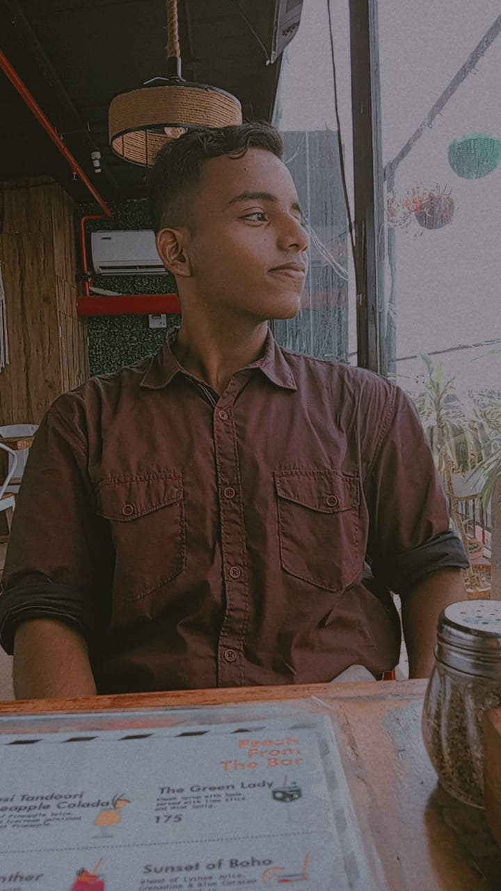

ABOUT ME
I am a dynamic creative designer and developer
Being a digital architect my task is sculpting seamless user journeys from the ground up. My superpower lies in the harmonious fusion of stunning visuals and intuitive functionality. By wielding the latest technologies like Node JS and React along with HTML,CSS and JS and a deep understanding of user behavior, I craft interfaces that feel as natural as breathing. Whether it's building a captivating landing page that converts visitors or crafting a complex data visualization that empowers users, approaches each project with a passion for innovation and an unwavering commitment to user-centric design.